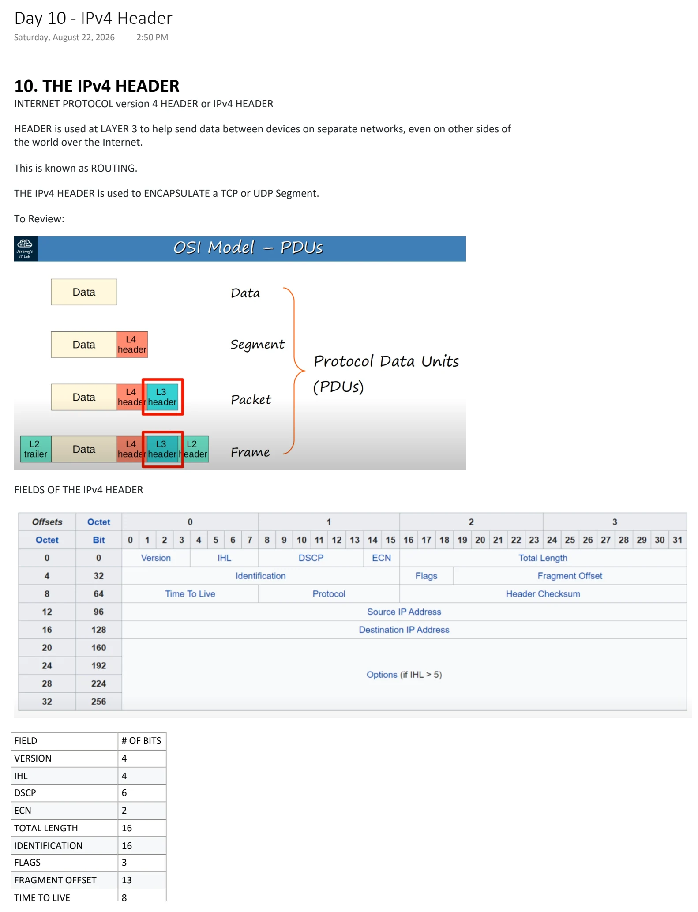
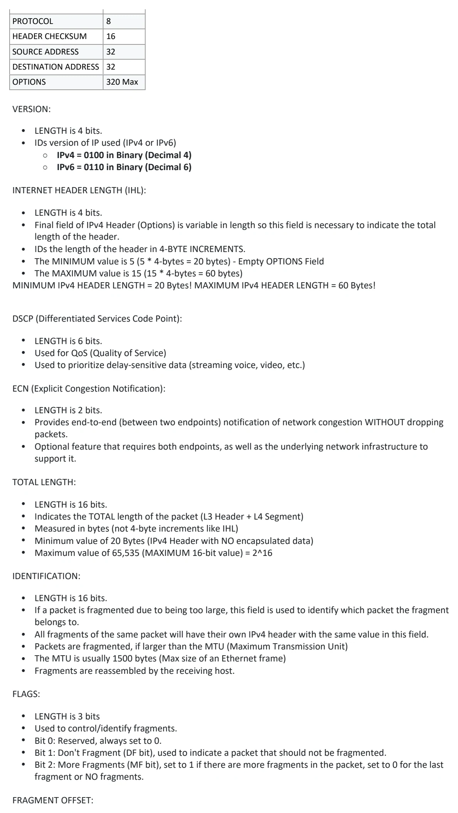
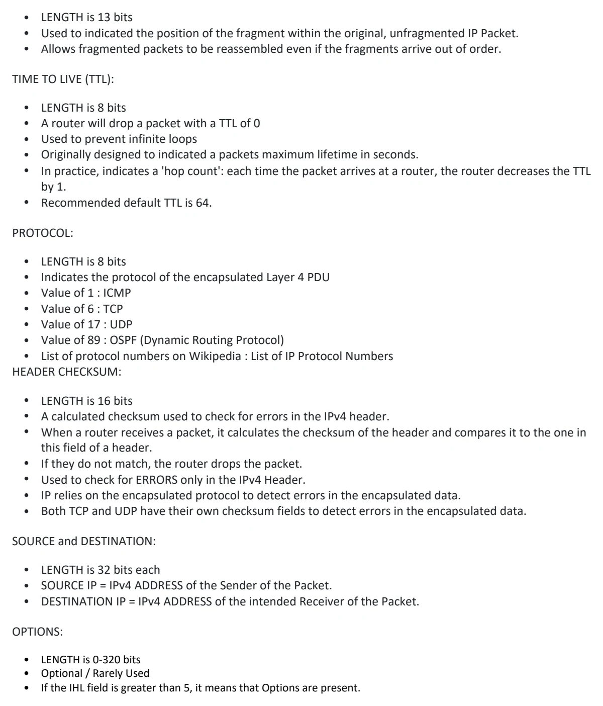

IPv4 Header
Download original PDF


Text view — IPv4 Header
Extracted from the original export. Diagrams and some formatting appear in the notes above.
Day 10 - IPv4 Header Saturday, August 22, 2026 2:50 PM 10. THE IPv4 HEADER INTERNET PROTOCOL version 4 HEADER or IPv4 HEADER HEADER is used at LAYER 3 to help send data between devices on separate networks, even on other sides of the world over the Internet. This is known as ROUTING. THE IPv4 HEADER is used to ENCAPSULATE a TCP or UDP Segment. To Review: FIELDS OF THE IPv4 HEADER FIELD # OF BITS VERSION 4 IHL 4 DSCP 6 ECN 2 TOTAL LENGTH 16 IDENTIFICATION 16 FLAGS 3 FRAGMENT OFFSET 13 TIME TO LIVE 8 PROTOCOL 8 HEADER CHECKSUM 16 SOURCE ADDRESS 32 DESTINATION ADDRESS 32 OPTIONS 320 Max VERSION: • LENGTH is 4 bits. • IDs version of IP used (IPv4 or IPv6) ○ IPv4 = 0100 in Binary (Decimal 4) ○ IPv6 = 0110 in Binary (Decimal 6) INTERNET HEADER LENGTH (IHL): • LENGTH is 4 bits. • Final field of IPv4 Header (Options) is variable in length so this field is necessary to indicate the total length of the header. • IDs the length of the header in 4-BYTE INCREMENTS. • The MINIMUM value is 5 (5 * 4-bytes = 20 bytes) - Empty OPTIONS Field • The MAXIMUM value is 15 (15 * 4-bytes = 60 bytes) MINIMUM IPv4 HEADER LENGTH = 20 Bytes! MAXIMUM IPv4 HEADER LENGTH = 60 Bytes! DSCP (Differentiated Services Code Point): • LENGTH is 6 bits. • Used for QoS (Quality of Service) • Used to prioritize delay-sensitive data (streaming voice, video, etc.) ECN (Explicit Congestion Notification): • LENGTH is 2 bits. • Provides end-to-end (between two endpoints) notification of network congestion WITHOUT dropping packets. • Optional feature that requires both endpoints, as well as the underlying network infrastructure to support it. TOTAL LENGTH: • LENGTH is 16 bits. • Indicates the TOTAL length of the packet (L3 Header + L4 Segment) • Measured in bytes (not 4-byte increments like IHL) • Minimum value of 20 Bytes (IPv4 Header with NO encapsulated data) • Maximum value of 65,535 (MAXIMUM 16-bit value) = 2^16 IDENTIFICATION: • LENGTH is 16 bits. • If a packet is fragmented due to being too large, this field is used to identify which packet the fragment belongs to. • All fragments of the same packet will have their own IPv4 header with the same value in this field. • Packets are fragmented, if larger than the MTU (Maximum Transmission Unit) • The MTU is usually 1500 bytes (Max size of an Ethernet frame) • Fragments are reassembled by the receiving host. FLAGS: • LENGTH is 3 bits • Used to control/identify fragments. • Bit 0: Reserved, always set to 0. • Bit 1: Don't Fragment (DF bit), used to indicate a packet that should not be fragmented. • Bit 2: More Fragments (MF bit), set to 1 if there are more fragments in the packet, set to 0 for the last fragment or NO fragments. FRAGMENT OFFSET: • LENGTH is 13 bits • Used to indicated the position of the fragment within the original, unfragmented IP Packet. • Allows fragmented packets to be reassembled even if the fragments arrive out of order. TIME TO LIVE (TTL): • LENGTH is 8 bits • A router will drop a packet with a TTL of 0 • Used to prevent infinite loops • Originally designed to indicated a packets maximum lifetime in seconds. • In practice, indicates a 'hop count': each time the packet arrives at a router, the router decreases the TTL by 1. • Recommended default TTL is 64. PROTOCOL: • LENGTH is 8 bits • Indicates the protocol of the encapsulated Layer 4 PDU • Value of 1 : ICMP • Value of 6 : TCP • Value of 17 : UDP • Value of 89 : OSPF (Dynamic Routing Protocol) • List of protocol numbers on Wikipedia : List of IP Protocol Numbers HEADER CHECKSUM: • LENGTH is 16 bits • A calculated checksum used to check for errors in the IPv4 header. • When a router receives a packet, it calculates the checksum of the header and compares it to the one in this field of a header. • If they do not match, the router drops the packet. • Used to check for ERRORS only in the IPv4 Header. • IP relies on the encapsulated protocol to detect errors in the encapsulated data. • Both TCP and UDP have their own checksum fields to detect errors in the encapsulated data. SOURCE and DESTINATION: • LENGTH is 32 bits each • SOURCE IP = IPv4 ADDRESS of the Sender of the Packet. • DESTINATION IP = IPv4 ADDRESS of the intended Receiver of the Packet. OPTIONS: • LENGTH is 0-320 bits • Optional / Rarely Used • If the IHL field is greater than 5, it means that Options are present. Day 10 - IPv4 Header Saturday, August 22, 2026 2:50 PM 10. THE IPv4 HEADER INTERNET PROTOCOL version 4 HEADER or IPv4 HEADER HEADER is used at LAYER 3 to help send data between devices on separate networks, even on other sides of the world over the Internet. This is known as ROUTING. THE IPv4 HEADER is used to ENCAPSULATE a TCP or UDP Segment. To Review: FIELDS OF THE IPv4 HEADER FIELD # OF BITS VERSION 4 IHL 4 DSCP 6 ECN 2 TOTAL LENGTH 16 IDENTIFICATION 16 FLAGS 3 FRAGMENT OFFSET 13 TIME TO LIVE 8 PROTOCOL 8 HEADER CHECKSUM 16 SOURCE ADDRESS 32 DESTINATION ADDRESS 32 OPTIONS 320 Max VERSION: • LENGTH is 4 bits. • IDs version of IP used (IPv4 or IPv6) ○ IPv4 = 0100 in Binary (Decimal 4) ○ IPv6 = 0110 in Binary (Decimal 6) INTERNET HEADER LENGTH (IHL): • LENGTH is 4 bits. • Final field of IPv4 Header (Options) is variable in length so this field is necessary to indicate the total length of the header. • IDs the length of the header in 4-BYTE INCREMENTS. • The MINIMUM value is 5 (5 * 4-bytes = 20 bytes) - Empty OPTIONS Field • The MAXIMUM value is 15 (15 * 4-bytes = 60 bytes) MINIMUM IPv4 HEADER LENGTH = 20 Bytes! MAXIMUM IPv4 HEADER LENGTH = 60 Bytes! DSCP (Differentiated Services Code Point): • LENGTH is 6 bits. • Used for QoS (Quality of Service) • Used to prioritize delay-sensitive data (streaming voice, video, etc.) ECN (Explicit Congestion Notification): • LENGTH is 2 bits. • Provides end-to-end (between two endpoints) notification of network congestion WITHOUT dropping packets. • Optional feature that requires both endpoints, as well as the underlying network infrastructure to support it. TOTAL LENGTH: • LENGTH is 16 bits. • Indicates the TOTAL length of the packet (L3 Header + L4 Segment) • Measured in bytes (not 4-byte increments like IHL) • Minimum value of 20 Bytes (IPv4 Header with NO encapsulated data) • Maximum value of 65,535 (MAXIMUM 16-bit value) = 2^16 IDENTIFICATION: • LENGTH is 16 bits. • If a packet is fragmented due to being too large, this field is used to identify which packet the fragment belongs to. • All fragments of the same packet will have their own IPv4 header with the same value in this field. • Packets are fragmented, if larger than the MTU (Maximum Transmission Unit) • The MTU is usually 1500 bytes (Max size of an Ethernet frame) • Fragments are reassembled by the receiving host. FLAGS: • LENGTH is 3 bits • Used to control/identify fragments. • Bit 0: Reserved, always set to 0. • Bit 1: Don't Fragment (DF bit), used to indicate a packet that should not be fragmented. • Bit 2: More Fragments (MF bit), set to 1 if there are more fragments in the packet, set to 0 for the last fragment or NO fragments. FRAGMENT OFFSET: • LENGTH is 13 bits • Used to indicated the position of the fragment within the original, unfragmented IP Packet. • Allows fragmented packets to be reassembled even if the fragments arrive out of order. TIME TO LIVE (TTL): • LENGTH is 8 bits • A router will drop a packet with a TTL of 0 • Used to prevent infinite loops • Originally designed to indicated a packets maximum lifetime in seconds. • In practice, indicates a 'hop count': each time the packet arrives at a router, the router decreases the TTL by 1. • Recommended default TTL is 64. PROTOCOL: • LENGTH is 8 bits • Indicates the protocol of the encapsulated Layer 4 PDU • Value of 1 : ICMP • Value of 6 : TCP • Value of 17 : UDP • Value of 89 : OSPF (Dynamic Routing Protocol) • List of protocol numbers on Wikipedia : List of IP Protocol Numbers HEADER CHECKSUM: • LENGTH is 16 bits • A calculated checksum used to check for errors in the IPv4 header. • When a router receives a packet, it calculates the checksum of the header and compares it to the one in this field of a header. • If they do not match, the router drops the packet. • Used to check for ERRORS only in the IPv4 Header. • IP relies on the encapsulated protocol to detect errors in the encapsulated data. • Both TCP and UDP have their own checksum fields to detect errors in the encapsulated data. SOURCE and DESTINATION: • LENGTH is 32 bits each • SOURCE IP = IPv4 ADDRESS of the Sender of the Packet. • DESTINATION IP = IPv4 ADDRESS of the intended Receiver of the Packet. OPTIONS: • LENGTH is 0-320 bits • Optional / Rarely Used • If the IHL field is greater than 5, it means that Options are present. Day 10 - IPv4 Header Saturday, August 22, 2026 2:50 PM 10. THE IPv4 HEADER INTERNET PROTOCOL version 4 HEADER or IPv4 HEADER HEADER is used at LAYER 3 to help send data between devices on separate networks, even on other sides of the world over the Internet. This is known as ROUTING. THE IPv4 HEADER is used to ENCAPSULATE a TCP or UDP Segment. To Review: FIELDS OF THE IPv4 HEADER FIELD # OF BITS VERSION 4 IHL 4 DSCP 6 ECN 2 TOTAL LENGTH 16 IDENTIFICATION 16 FLAGS 3 FRAGMENT OFFSET 13 TIME TO LIVE 8 PROTOCOL 8 HEADER CHECKSUM 16 SOURCE ADDRESS 32 DESTINATION ADDRESS 32 OPTIONS 320 Max VERSION: • LENGTH is 4 bits. • IDs version of IP used (IPv4 or IPv6) ○ IPv4 = 0100 in Binary (Decimal 4) ○ IPv6 = 0110 in Binary (Decimal 6) INTERNET HEADER LENGTH (IHL): • LENGTH is 4 bits. • Final field of IPv4 Header (Options) is variable in length so this field is necessary to indicate the total length of the header. • IDs the length of the header in 4-BYTE INCREMENTS. • The MINIMUM value is 5 (5 * 4-bytes = 20 bytes) - Empty OPTIONS Field • The MAXIMUM value is 15 (15 * 4-bytes = 60 bytes) MINIMUM IPv4 HEADER LENGTH = 20 Bytes! MAXIMUM IPv4 HEADER LENGTH = 60 Bytes! DSCP (Differentiated Services Code Point): • LENGTH is 6 bits. • Used for QoS (Quality of Service) • Used to prioritize delay-sensitive data (streaming voice, video, etc.) ECN (Explicit Congestion Notification): • LENGTH is 2 bits. • Provides end-to-end (between two endpoints) notification of network congestion WITHOUT dropping packets. • Optional feature that requires both endpoints, as well as the underlying network infrastructure to support it. TOTAL LENGTH: • LENGTH is 16 bits. • Indicates the TOTAL length of the packet (L3 Header + L4 Segment) • Measured in bytes (not 4-byte increments like IHL) • Minimum value of 20 Bytes (IPv4 Header with NO encapsulated data) • Maximum value of 65,535 (MAXIMUM 16-bit value) = 2^16 IDENTIFICATION: • LENGTH is 16 bits. • If a packet is fragmented due to being too large, this field is used to identify which packet the fragment belongs to. • All fragments of the same packet will have their own IPv4 header with the same value in this field. • Packets are fragmented, if larger than the MTU (Maximum Transmission Unit) • The MTU is usually 1500 bytes (Max size of an Ethernet frame) • Fragments are reassembled by the receiving host. FLAGS: • LENGTH is 3 bits • Used to control/identify fragments. • Bit 0: Reserved, always set to 0. • Bit 1: Don't Fragment (DF bit), used to indicate a packet that should not be fragmented. • Bit 2: More Fragments (MF bit), set to 1 if there are more fragments in the packet, set to 0 for the last fragment or NO fragments. FRAGMENT OFFSET: • LENGTH is 13 bits • Used to indicated the position of the fragment within the original, unfragmented IP Packet. • Allows fragmented packets to be reassembled even if the fragments arrive out of order. TIME TO LIVE (TTL): • LENGTH is 8 bits • A router will drop a packet with a TTL of 0 • Used to prevent infinite loops • Originally designed to indicated a packets maximum lifetime in seconds. • In practice, indicates a 'hop count': each time the packet arrives at a router, the router decreases the TTL by 1. • Recommended default TTL is 64. PROTOCOL: • LENGTH is 8 bits • Indicates the protocol of the encapsulated Layer 4 PDU • Value of 1 : ICMP • Value of 6 : TCP • Value of 17 : UDP • Value of 89 : OSPF (Dynamic Routing Protocol) • List of protocol numbers on Wikipedia : List of IP Protocol Numbers HEADER CHECKSUM: • LENGTH is 16 bits • A calculated checksum used to check for errors in the IPv4 header. • When a router receives a packet, it calculates the checksum of the header and compares it to the one in this field of a header. • If they do not match, the router drops the packet. • Used to check for ERRORS only in the IPv4 Header. • IP relies on the encapsulated protocol to detect errors in the encapsulated data. • Both TCP and UDP have their own checksum fields to detect errors in the encapsulated data. SOURCE and DESTINATION: • LENGTH is 32 bits each • SOURCE IP = IPv4 ADDRESS of the Sender of the Packet. • DESTINATION IP = IPv4 ADDRESS of the intended Receiver of the Packet. OPTIONS: • LENGTH is 0-320 bits • Optional / Rarely Used • If the IHL field is greater than 5, it means that Options are present.